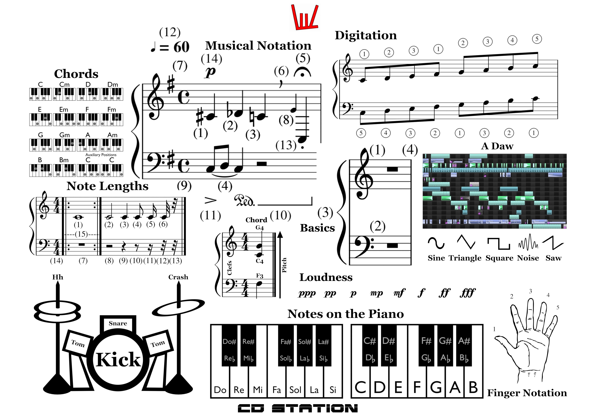
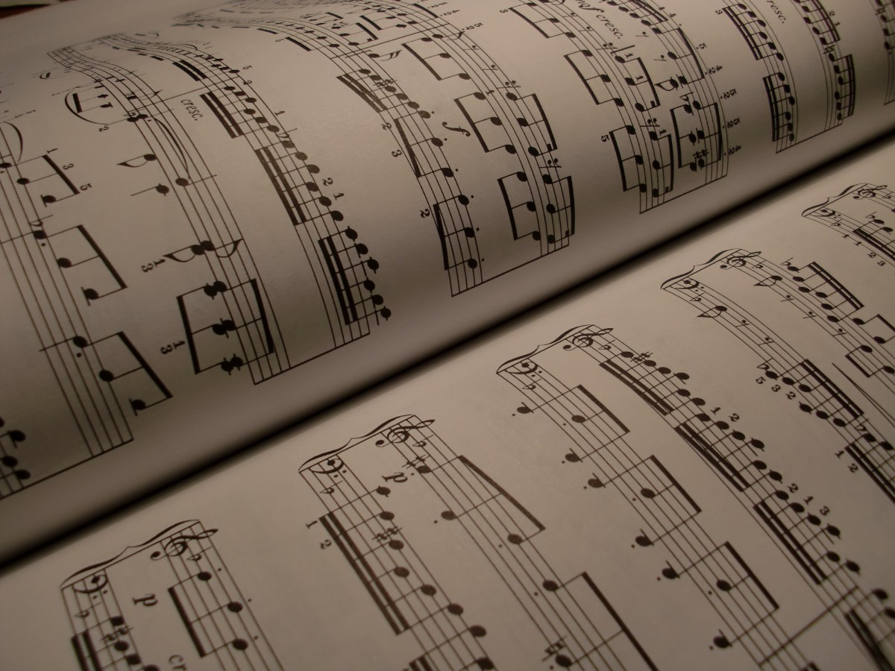

Blog
Music
Releases
Resources
Blog
Music
Releases
Resources
How do I get to know music theory?

Music Theory ©
Well, musical theory could be divided in:
1. Note lenghts and Digitation
2. Reading a Score
3. Chord knowledge and the Piano
4. Auxiliary
Music Scheme (Save this) ©
1. Note Lengths
⇢ Note lengths are the 1st thing that you have to know what you consider music theory. With music theory, I reccomand tht you also learn the piano.
As you are going through this blogpost, make sure to maximise (or save) the picture above. You will have to visualize it to get what I am saying.
Considering only the 4/4 time signature, we are going in with the note lengths (Search the picture for Note Lengths):
 ⇢ (1) Full Note (1, 2, 3, 4) = the entire measure⇢ (2) Half Note (1, 2) = half the measure ⇢ (3) Quarter Note (1) = 1/4 measure⇢ (4) Eight Note = 1/8 measure ⇢ (5) 16th Note = 1/16 measure⇢ (6) 32th Note = 1/32 measure⇢ (14) Time Signature⇢ (15) Repeat Symbols
⇢ (1) Full Note (1, 2, 3, 4) = the entire measure⇢ (2) Half Note (1, 2) = half the measure ⇢ (3) Quarter Note (1) = 1/4 measure⇢ (4) Eight Note = 1/8 measure ⇢ (5) 16th Note = 1/16 measure⇢ (6) 32th Note = 1/32 measure⇢ (14) Time Signature⇢ (15) Repeat Symbols Below the notes you have their pauses. A pause is silence that lasts a measure, 1/4 of a measure and so on.
2. Reading a Score
More musical notation for you! make sure you find "Musical Notation" in the picture.
Musical Score Notation:
⇢ (1) Sharp Note Symbol = Raises the pitch of the note with 1 semitone (go to the next piano key in the right) ⇢ (2) Flat Note Symbol = Brings down the pitch of the note with 1 semitone (go to the next piano key in the left) ⇢ (3) Natural Note Symbol = Brings the note to its natural value (Restores the note to its value prior to the Flat or Sharp symbol.) ⇢ (4) Legato Sign = Soft transition. If the notes are the same pitch, the first is sustained to cover both. ⇢ (5) Fermata = Lets the performer sustain the note more than the written value ⇢ (6) Breath Sign = Tells you when to breathe⇢ (7) Armature = Makes all the notes on the specific line or space in the score raise or bring down their pitch (Sharp and Flat symbols both have their place in the Armature)⇢ (8) Grace Note = Places a note right before (or after, if written there) the note in question. It is performed off-tempo right next to its note. ⇢ (9) 4/4 Common Time = Substitution for writing 4/4 as a Time Signature ⇢ (10) Pedal Symbol = Sustain with your Pedal ⇢ (11) Accent = Accentuate the note ⇢ (12) Tempo = Shows which note (duration) equals to how much time ⇢ (13) Staccato = Make the note sounds loud at first, but just for a fraction of time, do not sustain it ⇢ (14) Piano = there is a scale of loudness shown in the scheme (ppp pp p mp mf f ff fff)These things are really basic, so, make sure that you know them. Also, real basic is the score next to the word "Basic" in the scheme. The score goes like this:
⇢ (1) Treble (G / Sol) clef (the one on top) ⇢ (2) Bass (F / Fa) clef (the 2nd) ⇢ (3) Bracket means that the two staffs should be performed simultaneously. ⇢ (4) Vertical Line determines the end of a measure. Make sure to practice score reading when in front of the piano.
Seo ( I made this picture ) ©
3. Chord knowledge and the Piano
Now, with chords, I will only tell you the most common, and they are:
⇢ C E G (Do Mi Sol) ⇢ //// scris aici ⇢ //// scris aici Now, with the piano, make sure that you know the notes on the keyboard , as, well, that is also helpful when making music on a computer (they are shown in the scheme).
For Digitation (meaning what finger to put on what piano note), you have to top nd low right pictures. So, yeah, fingers are numbered.
With the piano, practive it every day to improve. You might as well give piano lessons!
4. Auxiliary
On the musical scheme, go for the percussion kit. You have the names for every element. They help you a lot when making music on a computer.
Also in the scheme, you have waveforms, right under the picture that shows a Daw. A Daw is a software for making music.
Make sure that you know the music theory you have to and also that you know serveral songs on the piano. If you don't know the piano, you are not a musicial, you are not able to compose anything (not even on a computer).
So, make sure that you know musical score notation.
A Score ©
So, make sure to name every musical score element when you find it and to be able to interpret a score on the piano.
Blog post type: Music

-----------------
-----------------